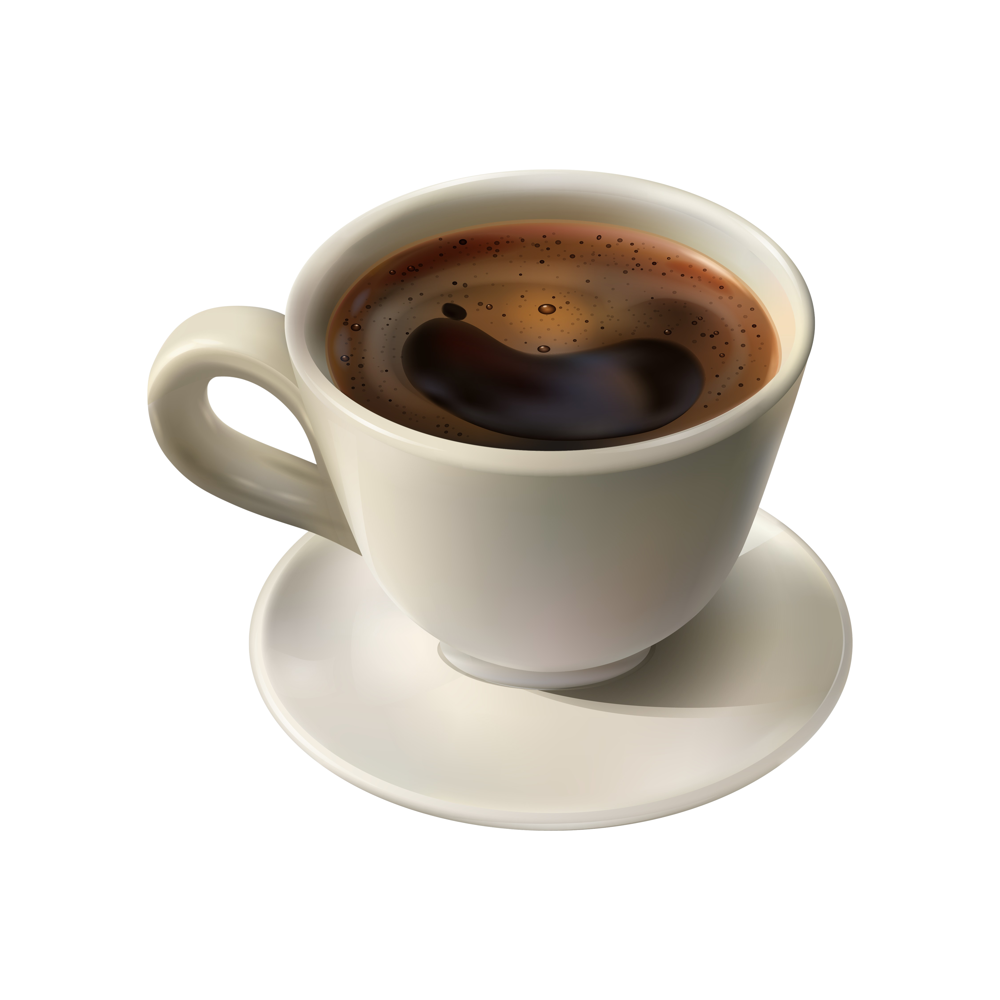

Misión:
Nuestra misión en Encinos Café y Bistro es proporcionar a nuestros clientes una experiencia culinaria excepcional, ofreciendo desayunos, comidas y cenas de alta calidad, así como una variedad de bebidas. Nos esforzamos por crear un ambiente acogedor y amigable que refleje la calidez y hospitalidad de Rio Bravo, Tamaulipas.
Visión:
Aspiramos a ser reconocidos como el principal destino culinario en Rio Bravo, Tamaulipas, conocidos por nuestra dedicación a la excelencia en el servicio, la innovación en nuestro menú y nuestro compromiso con la comunidad local. En Encinos Café y Bistro, buscamos crecer y evolucionar continuamente para satisfacer las necesidades cambiantes de nuestros clientes.
Valores:
Calidad: Nos comprometemos a utilizar solo los ingredientes más frescos y de la más alta calidad en todos nuestros platos.
Servicio: Nos esforzamos por proporcionar un servicio excepcional que supere las expectativas de nuestros clientes
Comunidad: Valoramos nuestra conexión con la comunidad local de Rio Bravo y nos esforzamos por contribuir positivamente a través de nuestras operaciones comerciales.
Integridad: Operamos nuestro negocio con integridad, tratando a nuestros clientes, proveedores y empleados con respeto y honestidad.